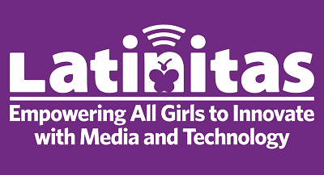

ENDRICA HARDWICK
endricahardwick@gmail.com | (512) 921-5040 | linkedin.com/in/endricahardwick
PROFESSIONAL SUMMARY
Professional looking for a technical people management position. Offer a combination of creativity and analytical
skills with the ability to create cost-effective solutions for interanl and external customers.
- Team Leadership
- Process Management
- Conflict Resolution
PROFESSIONAL EXPERIENCE
Dell Technologies | Austin, TX | 2010 - Present
Service Manager, 2014 - Present
- Team Lead for developing processes and policies for Federal IT Operations using an ITIL and NIST framework.
- Agile Mentor supporting IT teams in the adoption of agile practices
- Identifying IT Operations continual process improvement opportunities and presenting findings to senior staff
members
- Developing capacity resource plans to provide analysis and guidance for headcount decisions and assumptions
related to strategic changing business environments and/or initiative impact.
- Collaborate with team members to create executive presentations on data for improvement decisions.
Problem Management, 2013 - 2014
Governed, developed and enhanced IT Operations Known Error scorecard views for Solution Managers and portfolios
to improve and accelerate corrective action delivery.
Presented updates, findings and key performance indicators to senior management to identify and eliminate
recurring incidents and minimize the impact of incidents to the business.
Project Manager, 2010 - 2013
- Overal project management of service deployment projects for OEM, G500, Federal, Canada, and Large Enterprise
in the Americas and Global.
- Submitted and baselined projects to engineering for pilot, development, and manufacturing audit.
Hill Country Christian School of Austin | Austin, TX | 2000 - 2010
IT Manager, 2000 - 2010
- Provided IT client support for office administration, teachers, and student computer labs.
- Identified and documented process, system, and data flows.
- Identified and established software tool solutions and delivered end-user training.
EDUCATION
- Master of Science, Software Engineering, University of Houston Clear Lake; Houston, TX
- Bachelor of Arts, English Literature, St. Edwards University; Austin TX
CERTIFICATIONS
- Certified Scrum Product Owner, (CSPO)
- ITIL v3 Foundations Certificate in IT Service Management
TECHNOLOGY SKILLS
- Web Development: HTML
- Coding Tools: Visual Studio Code and Codepen
- MS Office 2016: Word, Excel, PowerPoint, Outlook, OneNote, Visio
- IT Incident Management: ServiceNow and Cherwell
- Agile: TFS
- Social Media: LinkedIn, Facebook, Twitter, Salesforce.com (SFDC), RocketChat
- Conferencing Tools: Zoom, Skype 2016
INTERESTS
VOLUNTEER EXPERIENCE & CAUSE
Latinitas was founded in Austin, TX in 2002. Latinitias provides media and technology programs for young Latinas
throughout Central Texas in Austin, Round Rock, San Marcos, and San Antonio.
Programs
- Game Chica - organized volunteers, secured Alienware system for raffel, and participated as a coding mentor.
- Power Chica - secured a donation of $10,000 towards the event.
- Day at Dell Summer Camp - organized a two day visit at Dell. There was a total of 40 girls, 8 speakers, and 80
volunteers who participated.
- Startup Chica - secured raffel donation items from Amy's Ice Creams, Tacodeli, Phil's Icehouse, Alamo Draft
House, Chaparral Ice, and Blazer Tag.
- Fundraising / Empowerment Circle - strengthen donor membership and relations.
